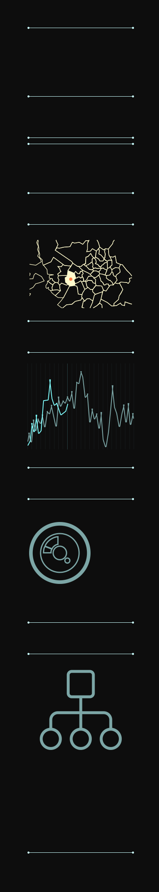

<div class="sector2-nav2">

  <div class="absolute fffef2 pt70" style="font-weight: 200;left: 100px;top: 100px;">MENU</div>

  <div ng-class="vm.currentState == 'state2' ? 'state2-btn-red' : 'state2-btn-sky'"
       style="left: 72px; top: 255px;"><a href="/#/noc-dr" style="color: #bfffff;">P2P Trading</a>
  </div>

  <!--
   * Tim 수정
   -->
  <div ng-class="vm.currentState == 'state2' ? 'state2-btn-red' : 'state2-btn-sky'"
       style="left: 72px; top: 485px;">MAP
    <!--<span class="state2-btn-feed">LIST</span>-->
  </div>

  <!--
   * Tim 수정
   -->
  <div ng-class="vm.currentState == 'state2' ? 'state2-btn-sky' : 'state2-btn-red'"
       style="left: 72px; top: 792px;">generation status
    <!--<span class="state2-btn-feed">LIST</span>-->
  </div>

  <div class="state2-btn-sky" style="left: 72px; top: 1149px;">field camera
    <!--<span class="state2-btn-feed" style="margin-left: 40px;">LIST</span>-->
  </div>

  <div class="state2-btn-sky" style="left: 72px; top: 1523px;">network <!--management-->
    <!--<span class="state2-btn-feed" style="margin-left: 40px;">LIST</span>-->
  </div>

  <div class="absolute c-7ca6a6 pt24" style="left: 240px; top:1268px;">
    camera1<br/>
    camera2<br/>
    camera3<br/>
    camera4<br/>
  </div>

  <div class="absolute pt24 bfffff" style="left: 118px;top: 1900px;">resource VIEW choice</div>

  <!--
    * Tim 수정
      - 이전, 다음 화면이 있을 경우에만 클릭동작, 버튼에 불 들어오도록 작업
      - vm.existPrevPage : 이전화면 존재 여부
      - vm.existNextPage : 다음화면 존재 여부
  -->
  <div class="sector2-buttonL" ng-click="state2_1.existPrevPage && state2_1.clickedL()"></div>
  <div class="sector2-buttonR" ng-click="state2_1.existNextPage && state2_1.clickedR()"></div>
  <div class="absolute pt18 c-7ca6a6" style="left: 161px;top: 2005px;">SCREEN</div>
</div>
